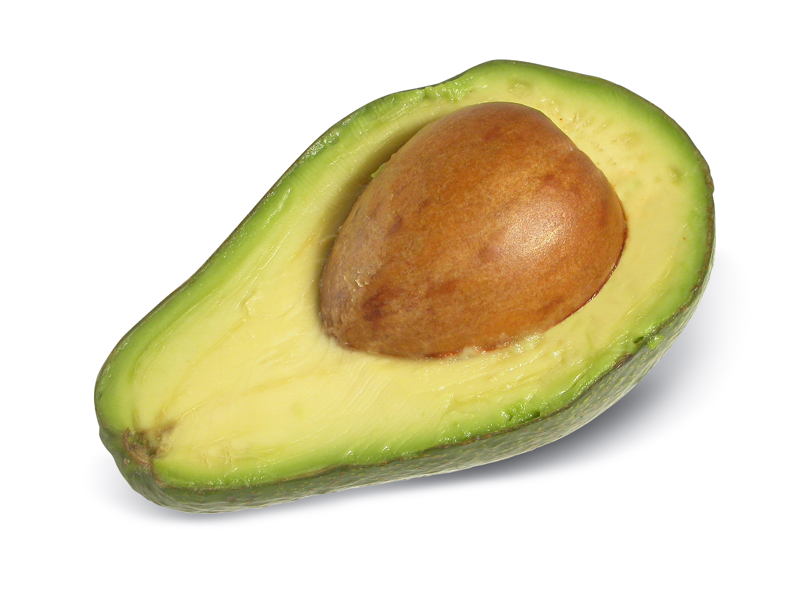

DIETA DE LA PAPAYA

La papaya es una fruta tropical muy popular por su buen sabor y por la cantidad de propiedades saludables que contiene.
Esta fruta tropical ayuda a combatir el estreñimiento, agiliza cicatrizaciones externas e internas, elimina los parásitos intestinales, refuerza la inmunidad gracias a su alto contenido en Vitamina C, calma el dolor e inflamación del estómago, es útil en casos de gastroenteritis y ayuda a limpiar nuestra piel por dentro.
Su composición es básicamente agua aunque contiene un tanto porciento muy pequeño de azúcar.
También está considerada con una fruta diurética, antioxidante, digestiva y que ayuda a combatir la celulitis.